開卷有益 ／
國中教育會考 ／ 數學 ／ 113 年113 年國中教育會考數學試題與答案
這一頁是民國 113 年國中教育會考數學的整份歷屆試題，共 27 題，題目與標準答案出自心測中心 會考歷屆試題（依著作權法 §9，考試試題不受著作權保護），其中 27 題附有詳解。以下逐題列出題幹、選項與答案；要計時作答或記錄成績，請用線上練習。
線上作答這一科 →
全部 27 題
第 1 題
算式\(\dfrac{3}{7}−(−\dfrac{1}{4})\)之值為何？
（A） \(\dfrac{19}{28}\)（B） \(\dfrac{5}{28}\)（C） \(\dfrac{4}{11}\)（D） \(\dfrac{2}{3}\)答案：（A）
詳解與考點 正解：算式中出現「減去一個負分數」，先把減負改寫成加正，再通分相加。3/7−(−1/4)=3/7+1/4。分母 7 與 4 的最小公倍數是 28，3/7=12/28、1/4=7/28，故 12/28+7/28=19/28，故 A 為正解。
B：5/28 是把原式算成 12/28−7/28，也就是漏掉「減去負數要變成加」這一步，錯誤。
C：4/11 是把分子與分母分別相加成 (3+1)/(7+4)；分數加法必須先通分，分母不能相加，錯誤。
D：2/3 與通分後的 19/28 不相等（19/28≈0.68、2/3≈0.67，兩者接近但不相同），且分數相加須先化為同分母才能比對，錯誤。
本題考點：負數的減法——a−(−b)=a+b，兩個負號相連即化為加；異分母分數加法——先取分母的最小公倍數通分（7 與 4 得 28），再把分子相加、分母維持不變；驗算習慣——把結果與選項化成同分母或小數比對，可及時攔下 (3+1)/(7+4) 這種把分母相加的算法。
第 2 題
圖（一）為一個直三角柱的展開圖，其中三個面被標示為甲、乙、丙。將此展開圖摺成直三角柱後，判斷下列敘述何者正確？
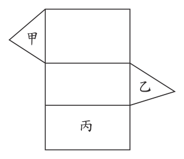
（A） 甲與乙平行，甲與丙垂直（B） 甲與乙平行，甲與丙平行（C） 甲與乙垂直，甲與丙垂直（D） 甲與乙垂直，甲與丙平行答案：（A）
詳解與考點 正解：題幹的直三角柱展開圖摺合後，甲、乙是兩個全等三角形底面，丙是長方形側面。直三角柱的兩底面互相平行，側面與底面垂直，因此甲與乙平行、甲與丙垂直，故 A 為正解。
B：甲與丙分別為底面與側面，兩平面垂直而非平行，錯誤。
C：甲與乙為兩個底面，摺合後互相平行，不是垂直，錯誤。
D：甲與乙不垂直，且甲與丙不平行，兩項皆錯誤。
本題考點：直三角柱的面位置關係——兩個全等底面互相平行；直柱的側面與底面垂直。
第 3 題
若二元一次聯立方程式 \( \begin{cases} 5x - 3y = 28 \\ y = -3x \end{cases} \) 的解為 \( \begin{cases} x = a \\ y = b \end{cases} \)，則 \( a + b \) 之值為何？
（A） \(-28\)（B） \(-14\)（C） \(-4\)（D） \(14\)答案：（C）
詳解與考點 正解：題幹給二元一次聯立方程式，第二式已寫成 y=−3x，適合代入第一式。5x−3y=28，代入 y=−3x，得 5x−3(−3x)=28。先算 −3(−3x)=9x，所以 5x+9x=14x=28，x=28÷14=2，即 a=2。再代回 y=−3×2=−6，即 b=−6。a+b=2+(−6)=−4，故 C 為正解。
A：−28 是符號處理錯誤，未完成求 a+b 的代入與相加。
B：−14 多因把 −3y 的負號或代入後的 9x 處理錯誤。
D：14 是停在 14x=28 的係數，沒有再除以 14 求 x 並代回求和，錯誤。
本題考點：代入消去法——將一式表示的未知數代入另一式，化為一元一次方程；符號運算——−3(−3x)=9x；聯立方程解——求得 x 後要代回求 y，再計算題目所問的 a+b。
第 4 題
若想在圖（二）的方格紙上沿著格線畫出坐標平面的 \(x\) 軸、\(y\) 軸並標記原點，且以小方格邊長作為單位長，則下列哪一種畫法可在方格紙的範圍內標出 \((5, 3)\)、\((-4, -4)\)、\((-3, 4)\)、\((3, -5)\) 四點？
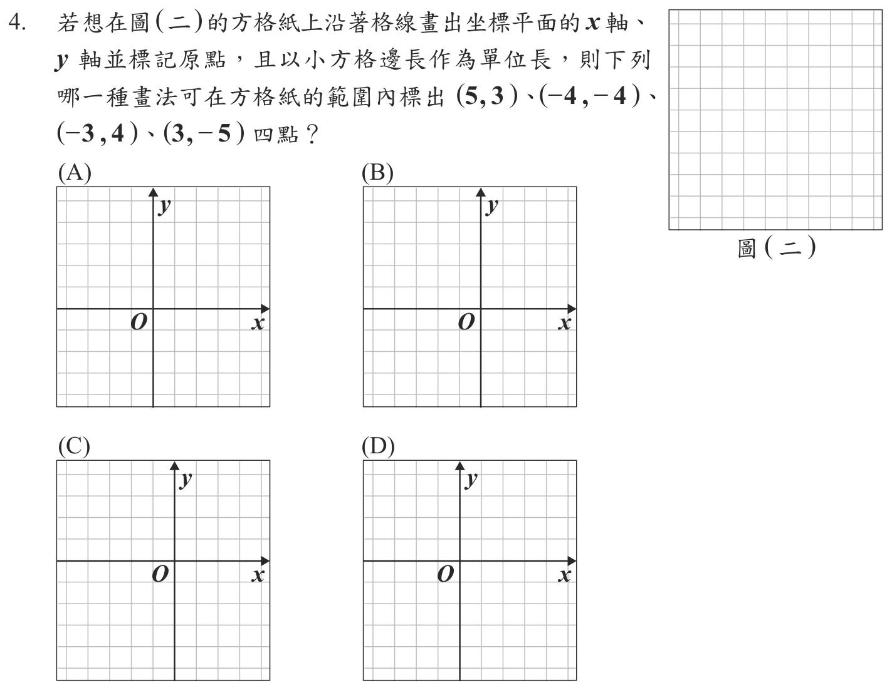
本題選項為上圖中的 A／B／C／D，請對照圖片作答。
答案：（D）
詳解與考點 正解：題幹要讓 x 從 −4 到 5、y 從 −5 到 4 的四點都留在方格紙內，先比較原點四周所需的格數。向右需 5 格才能標出（5，3），向左需 4 格才能標出（−4，−4），向上需 4 格才能標出（−3，4），向下需 5 格才能標出（3，−5）。因此原點要偏左、偏上，才能在右方與下方各多留 1 格。D 的原點位置符合，故 D 為正解。
A：原點未能同時偏左、偏上，右方或下方的格數不足，會使（5，3）或（3，−5）超出方格紙範圍，錯誤。
B：原點過於置中或偏下，無法保留向右 5 格與向下 5 格的範圍，錯誤。
C：原點位置使右方或下方至少一側少於 5 格，不能標出四點，錯誤。
本題考點：坐標平面範圍配置——先分別求 x 的左、右最大需求與 y 的上、下最大需求；原點若要向某方向多留格數，就要向反方向偏移。本題右方與下方各需 5 格，均比左方、上方多 1 格，所以原點應偏左上。
第 5 題
阿賢利用便利貼拼成一個聖誕樹圖案，聖誕樹圖案共有 10 層，每一層由三列的便利貼拼成，前 3 層如圖 ( 三 ) 所示。若同一層中每一列皆比前一列多 2 張，且每一層第一列皆比前一層第一列多 2 張，則此聖誕樹圖案由多少張便利貼拼成？
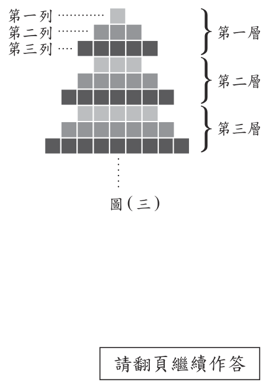
（A） 354（B） 360（C） 384（D） 390答案：（B）
詳解與考點 正解：題幹每一層的首列固定增加 2 張，且同層三列也各增加 2 張，適合先寫出第 n 層張數再作等差數列求和。第 1 層第一列是 1 張，第 n 層第一列＝1＋(n−1)×2=2n−1。第 n 層三列依序為 2n−1、2n+1、2n+3，合計＝(2n−1)＋(2n+1)＋(2n+3)＝6n+3。10 層總數＝Σ（6n+3）＝6×（1+2＋…＋10）＋3×10=6×55+30=330+30=360，故 B 為正解。
A：354 比正確總數少 6，通常是把某一層的規律少算一次，或未正確累加每層固定的＋3，錯誤。
C：384 比 360 多 24，表示首列起始值或各層增加規律取大，錯誤。
D：390 比 360 多 30，等於把每層的常數項＋3 多累加 10 次，錯誤。
本題考點：等差數列求和——先由層數 n 寫出首列 2n−1，再將同層三列相加為 6n+3；前 n 個正整數和為 n(n+1)÷2，本題 1 到 10 的和是 55。
第 6 題
箱內有 50 顆白球和 10 顆紅球，小慧打算從箱內抽球 31 次，每次從箱內抽出一球，如果抽出白球則將白球放回箱內，如果抽出紅球則不將紅球放回箱內。已知小慧在前 30 次抽球中共抽出紅球 4 次，若她第 31 次抽球時箱內的每顆球被抽出的機會相等，則這次她抽出紅球的機率為何？
（A） \(\dfrac{1}{5}\)（B） \(\dfrac{1}{6}\)（C） \(\dfrac{5}{12}\)（D） \(\dfrac{3}{28}\)答案：（D）
詳解與考點 正解：題幹的關鍵是白球抽後放回、紅球抽後不放回，所以先更新第 31 次前箱內的球數。前 30 次抽出紅球 4 次，剩餘紅球＝10−4=6 顆；白球每次都放回，仍是 50 顆。箱內總數＝50+6=56 顆，第 31 次抽到紅球的機率＝6÷56=3÷28=3/28，故 D 為正解。
A：1/5 相當於用原本 10 顆紅球與 50 顆白球直接計算，沒有扣除已抽出且未放回的 4 顆紅球，錯誤。
B：1/6 沒有以第 31 次箱內總球數 56 作分母，錯誤。
C：5/12 的分子、分母均未依「紅球不放回、白球放回」更新，錯誤。
本題考點：抽球後的數量更新——放回的白球數不變，不放回的紅球數要扣除；機率＝符合條件的球數÷當時箱內總球數。
第 7 題
圖（四）有 A、B 兩種圖案，其中 A 經過上下翻轉後與 B 相同，且圖案的外圍是正方形，圖（五）是將四個 A 圖以緊密且不重疊的方式排列成大正方形，圖（六）是將兩個 A 圖與兩個 B 圖以緊密且不重疊的方式排列成大正方形。判斷圖（五）、圖（六）是否為線對稱圖形？
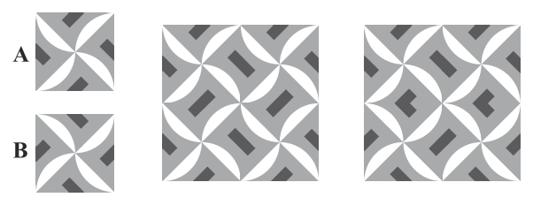
（A） 圖（五）、圖（六）皆是（B） 圖（五）、圖（六）皆不是（C） 圖（五）是，圖（六）不是（D） 圖（五）不是，圖（六）是答案：（D）
詳解與考點 正解：題幹指出 A 上下翻轉後與 B 相同，判斷時須沿可能的對稱軸實際翻摺，檢查花紋方向能否重合。圖（五）由 4 個方向相同的 A 拼成，沿中線翻摺時上下花紋方向不對齊，所以不是線對稱圖形。圖（六）以 2 個 A 與 2 個 B 排列，A、B 上下翻轉後互補，沿水平中線翻摺時可重合，所以是線對稱圖形，故 D 為正解。
A：圖（六）是線對稱圖形，但圖（五）不是，不能判為皆是。
B：圖（五）不是線對稱圖形，但圖（六）可沿水平中線重合，不能判為皆不是。
C：把兩圖的判斷剛好相反；它看起來對，是因為兩圖都由 4 個小圖拼成，但是否對稱取決於翻摺後花紋方向是否重合。
本題考點：線對稱判定——沿假設的對稱軸翻摺，兩側完全重合才是線對稱；圖形拼排——小圖的方向與位置都會影響整體是否對稱。
第 8 題
若 \( a = 3.2 \times 10^{-5} \)，\( b = 7.5 \times 10^{-5} \)，\( c = 6.3 \times 10^{-6} \)，則 \( a \)、\( b \)、\( c \) 三數的大小關係為何？
（A） \( a < b < c \)（B） \( a < c < b \)（C） \( c < a < b \)（D） \( c < b < a \)答案：（C）
詳解與考點 正解：題幹要比較科學記號大小，方法是先比 10 的指數，指數相同才比前面的數字。a=3.2×10⁻⁵、b=7.5×10⁻⁵、c=6.3×10⁻⁶。先比指數：−5＞−6，所以 10⁻⁵＞10⁻⁶，因此 a>c、b>c。再比 a、b：兩者都有 10⁻⁵，只要比 3.2<7.5，得 a<b。合併為 c<a<b，故 C 正確。
A：a<b 的部分正確，但把 c 排在最大；−6＜−5，所以 10⁻⁶ 應小於 10⁻⁵。
B：把 c 排在 a、b 之間，仍誤判 10⁻⁶ 與 10⁻⁵ 的大小。
D：c 最小正確，但 b<a 錯誤；同乘 10⁻⁵ 時，7.5>3.2，所以 b>a。它看起來對，是因為容易只看負指數中的 6 比 5 大，卻忽略 −6＜−5。
本題考點：科學記號比大小——先比 10 的指數，指數較大者數值較大；同指數比較——再比較係數；負指數判準——−5＞−6，故 10⁻⁵＞10⁻⁶。
第 9 題
癌症分期是為了區別惡性腫瘤影響人體健康的程度，某國統計 2011 年確診四種癌症一到四期的患者在 3 年後存活的比率（3 年存活率），並依據癌症類別與不同分期將資料整理成圖（七）。甲、乙兩人對該國 2011 年確診上述四種癌症的患者提出看法如下：
（甲）一到四期的乳癌患者的 3 年存活率皆高於 50%
（乙）在這四種癌症中，三期與四期的 3 年存活率相差最多的是胃癌
對於甲、乙兩人的看法，下列判斷何者正確？
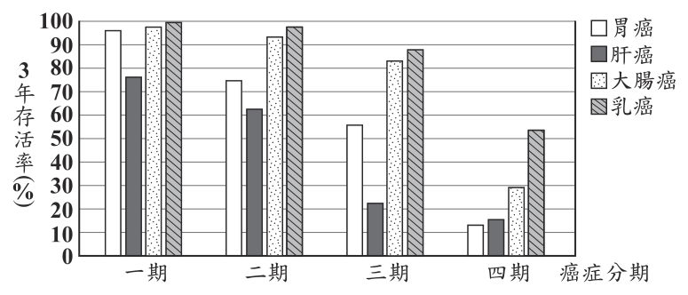
（A） 甲、乙皆正確（B） 甲、乙皆錯誤（C） 甲正確，乙錯誤（D） 甲錯誤，乙正確答案：（C）
詳解與考點 正解：甲的「皆高於 50%」是全稱句，乙的「相差最多」是比較句，兩句都得把圖中四期資料逐一核對過一輪，不能只看一兩筆數字就下判斷。先看甲，乳癌一到四期的 3 年存活率依圖讀取約為 99%、97%、88%、53%，四期都高於 50%，甲正確。再看乙，把四種癌症三期減四期的存活率差都算一遍：胃癌約 56% 降到 14%，相差約 42 個百分點；肝癌約 23% 降到 16%，相差約 7 個百分點；大腸癌約 83% 降到 30%，相差約 53 個百分點；乳癌約 88% 降到 53%，相差約 35 個百分點。四者之中相差最多的其實是大腸癌，不是胃癌，所以乙錯誤。甲正確、乙錯誤對應 C，故 C 為正解。
A：甲確實成立，但乙不成立。大腸癌三、四期的落差（約 53 個百分點）比胃癌（約 42 個百分點）更大，胃癌並不是四者中落差最大者，因此不能兩句都判正確，錯誤。
B：乙確實不成立，但甲並未跟著錯。乳癌一到四期的 3 年存活率都高於 50%，即使降到最低的四期也約有 53%，因此不能兩句都判錯誤，錯誤。
D：把甲、乙的正誤整個對調，錯誤。乙看起來成立，是因為胃癌四期的存活率（約 14%）是四種癌症中最低的一個，容易把「四期數值最低」誤認成「落差最大」；但落差要看三期到四期究竟掉了多少，大腸癌從約 83% 掉到約 30%，掉了約 53 個百分點，比胃癌的約 42 個百分點更多，落差其實是大腸癌最大。甲看起來不成立，是因為乳癌四期的長條在圖上明顯變矮、逼近 50% 那條格線，但實際讀值約 53%，仍未跌破 50%，甲仍然正確。
本題考點：全稱句判讀，遇到「皆」「都」這類全稱敘述，必須把每一筆資料都檢查一遍，只要有一筆不符，整句就不成立；差值比較，比較「相差最多」時要對每一類都算出前後兩期的差再互相比較，不能只看某一期的最終數值高低來判斷升降的大小。
第 10 題
下列何者為多項式 \(5x(5x-2)-4(5x-2)^2\) 的因式分解？
（A） \((5x-2)(25x-8)\)（B） \((5x-2)(5x-4)\)（C） \((5x-2)(-15x+8)\)（D） \((5x-2)(-20x+4)\)答案：（C）
詳解與考點 正解：題幹兩項都有公因式（5x−2），因此先提出公因式。5x（5x−2）−4（5x−2）²=（5x−2）［5x−4（5x−2）］。括號內 4（5x−2）=20x−8，所以 5x−20x+8=−15x+8，原式=（5x−2）（−15x+8），故 C 為正解。
A：（5x−2）（25x−8）中的 25x 未正確合併 5x−20x，錯誤。
B：（5x−2）（5x−4）漏將 −4 乘入整個（5x−2），錯誤。
D：（5x−2）（−20x+4）只處理 −4（5x−2）的部分，漏加原有的 5x，錯誤。
本題考點：提公因式——各項共同含有的因式可先提出；括號運算——係數要乘入括號的每一項，再合併同類項。
第 11 題
將 \( \dfrac{9}{4-\sqrt{7}} \) 化簡為 \( a+b\sqrt{7} \)，其中 \( a \)、\( b \) 為整數，求 \( a+b \) 之值為何？
（A） \(5\)（B） \(3\)（C） \(-9\)（D） \(-15\)答案：（A）
詳解與考點 正解：題幹分母含根式，選用共軛根式有理化。9／（4−√7）=［9（4+√7）］／［（4−√7）（4+√7）］。分母=4²−（√7）²=16−7=9，分子=36+9√7，因此原式=（36+9√7）／9=4+√7。故 a=4、b=1，a+b=4+1=5，A 為正解。
B：若把 a+b 錯算成 4−1，會誤得 3；但 b 是 +1，應算 4+1。
C：若把平方差順序顛倒成 7−16，會得到錯誤的中間值 −9，且不能把分母的中間值直接當成 a+b。
D：若把分母錯算成 4−7=−3，亦即漏掉 4 的平方，再以（36+9√7）／（−3）計算，會得到 −12−3√7，誤算 a+b=−12−3=−15；正確分母應為 4²−7=9。
本題考點：分母有理化——分母為 p−√q 時，分子分母同乘 p+√q；平方差公式——（p−√q）（p+√q）=p²−q。
第 12 題
甲、乙兩個二次函數分別為 \( y = (x + 20)^2 + 60 \)、\( y = -(x - 30)^2 + 60 \)，判斷下列敘述何者正確？
（A） 甲有最大值，且其值為 \( x = 20 \) 時的 \( y \) 值（B） 甲有最小值，且其值為 \( x = 20 \) 時的 \( y \) 值（C） 乙有最大值，且其值為 \( x = 30 \) 時的 \( y \) 值（D） 乙有最小值，且其值為 \( x = 30 \) 時的 \( y \) 值答案：（C）
詳解與考點 正解：題幹給二次函數的頂點式，應由括號內為0找頂點，再由二次項係數正負判斷最大或最小值。甲：y=(x+20)²＋60。令x+20=0，得x＝−20；代入得y=(−20+20)²＋60=0²＋60=60。因二次項係數為正，開口向上，甲在x＝−20時有最小值60。乙：y＝−(x−30)²＋60。令x−30=0，得x=30；代入得y＝−(30−30)²＋60＝−0²＋60=60。因二次項係數為負，開口向下，乙在x=30時有最大值60。因此 C 為正解。
A：甲的頂點橫坐標應由x+20=0算得x＝−20，不是x=20；且甲開口向上，有最小值而非最大值。
B：甲確有最小值，但在x＝−20時取得。若代入x=20，y=(20+20)²＋60=40²＋60=1660，不是最小值60。
D：乙在x=30時y=60，但開口向下，此值為最大值而非最小值。
本題考點：二次函數頂點式——y=a(x−h)²＋k的頂點為(h，k)，先令括號內為0求h；開口判準——a>0有最小值，a<0有最大值。
第 13 題
圖（八）為阿成調整他的電腦畫面的解析度時看到的選項，當他從建議選項 \(1920 \times 1080\) 調整成 \(1400 \times 1050\) 時，由於比例改變（\(1920 : 1080 \neq 1400 : 1050\)），畫面左右會出現黑色區域，當比例不變就不會有此問題。判斷阿成將他的電腦畫面解析度從 \(1920 \times 1080\) 調整成下列哪一種時，畫面左右不會出現黑色區域？
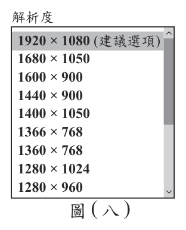
（A） \(1680 \times 1050\)（B） \(1600 \times 900\)（C） \(1440 \times 900\)（D） \(1280 \times 1024\)答案：（B）
詳解與考點 正解：題幹指出畫面不出現黑色區域的條件是比例不變，先將原解析度化為最簡比。1920:1080 同除 120，得 16:9。B 的 1600:900 同除 100，得 16:9，與原比例相同，故 B 為正解。
A：1680:1050 同除 210，得 8:5，不是 16:9，會出現黑色區域。
C：1440:900 同除 180，得 8:5，不是 16:9，會出現黑色區域。它看起來可能對，是因為 1440 與 900 都較接近常見畫面尺寸，但比例仍不相同。
D：1280:1024 同除 256，得 5:4，不是 16:9，會出現黑色區域。
本題考點：最簡整數比——兩個解析度的寬：高化簡後相同，比例才相同；比例判定——寬高同時乘除相同非零數，最簡比不變。
第 14 題
小玲搭飛機出國旅遊，已知她搭飛機產生的碳排放量為 800 公斤，為了彌補這些碳排放量，她決定上下班時從駕駛汽車改成搭公車。依據圖（九）的資訊，假設小玲每日上下班駕駛汽車或搭公車的來回總距離皆為 20 公里，則與駕駛汽車相比，她至少要改搭公車上下班幾天，減少產生的碳排放量才會超過她搭飛機產生的碳排放量？
圖（九）每人使用各種交通工具每移動 1 公里產生的碳排放量 交通工具 每移動 1 公里產生的碳排放量 自行車 0 公斤 公車 0.04 公斤 機車 0.05 公斤 汽車 0.17 公斤
（A） 310 天（B） 309 天（C） 308 天（D） 307 天答案：（C）
詳解與考點 正解：題幹問最少天數且要求減量「超過」800 公斤，應先用表中每公里排放量求每日差值，再列嚴格不等式。每日來回 20 公里，駕駛汽車排放=20×0.17=3.4 公斤；搭公車排放=20×0.04=0.8 公斤。每天改搭公車減少=3.4−0.8=2.6 公斤。設改搭 x 天，2.6x>800，x>800÷2.6=307.692……；x 必為整數且須超過，最少為 308 天，故 C 為正解。
A：310 天雖可超過 800 公斤，但不是符合條件的最少整數天數。
B：309 天也可超過 800 公斤，但仍比最少天數多 1 天。
D：307 天的減量=2.6×307=798.2 公斤，未超過 800 公斤，錯誤。
本題考點：一元一次不等式——先以每單位差量乘天數建立不等式；最少整數解——x>307.692……時，最小整數為 308，且「超過」不能取等號。
第 15 題
甲、乙兩個最簡分數分別為\(\dfrac{10}{a}\)、\(\dfrac{18}{b}\)，其中a、b為正整數。若將甲、乙通分化成相同的分母後，甲的分子變為50，乙的分子變為54，則下列關於a的敘述，何者正確？
（A） a是3的倍數，也是5的倍數（B） a是3的倍數，但不是5的倍數（C） a是5的倍數，但不是3的倍數（D） a不是3的倍數，也不是5的倍數答案：（B）
詳解與考點 正解：關鍵在「通分後分子變成多少」這句話——它等於告訴我們兩個分數各乘了幾倍，於是能寫出一條 a 與 b 的關係式。甲的分子由 10 變成 50，乘了 5 倍；乙的分子由 18 變成 54，乘了 3 倍。分母同步放大相同倍數，故共同分母為 5a=3b。因 3 與 5 互質，5a 是 3 的倍數就迫使 a 是 3 的倍數，設 a=3k（k 為正整數），代入 5×3k=3b 得 b=5k。再用「最簡分數」收斂 k：10/(3k) 為最簡，故 k 不含因數 2 與 5；18/(5k) 為最簡，故 k 不含因數 2 與 3。合起來 k 不含 2、3、5。因此 a=3k 必為 3 的倍數，而 3 與 k 都不含因數 5，故 a 不是 5 的倍數，故 B 為正解。
A：a=3k 確實含因數 3，但最簡分數的條件已排除 k 含因數 5，故 a 不會是 5 的倍數，錯誤。
C、D：兩者都漏掉 5a=3b 加上 3、5 互質所逼出的「3 整除 a」這一步；由 a=3k 可知 a 必為 3 的倍數，C 進一步把 a 誤判為 5 的倍數，D 則連 3 的倍數也一併否定，皆錯誤。
本題考點：通分的本質——分子與分母同乘相同倍數，分子放大幾倍分母就放大幾倍，由 10→50 乘 5 倍、18→54 乘 3 倍可寫出共同分母 5a=3b；互質推倍數——5a=3b 且 3 與 5 互質時，3 必整除 a、5 必整除 b；最簡分數的用法——10/a 與 18/b 皆最簡，代表分子與分母沒有共同質因數，據此把參數 k 中的 2、3、5 逐一排除，才能斷定 a 是 3 的倍數而非 5 的倍數。
第 16 題
有研究報告指出，1880 年至 2020 年全球平均氣溫上升趨勢約為每十年上升 0.08 ℃。已知 2020 年全球平均氣溫為 14.88 ℃，假設未來的全球平均氣溫上升趨勢與上述趨勢相同，且每年上升的度數相同，則預估 2020 年之後第 \(x\) 年的全球平均氣溫為多少 ℃？（以 \(x\) 表示）
（A） \( 14.88 + 0.08x \)（B） \( 14.88 + 0.008x \)（C） \( 14.88 + 0.08\,[\,x + (2020 - 1880)\,] \)（D） \( 14.88 + 0.008\,[\,x + (2020 - 1880)\,] \)答案：（B）
詳解與考點 正解：題幹給的是每十年上升 0.08 ℃，但 x 的單位是年，先換算成年增量。0.08÷10=0.008，所以每年上升 0.008 ℃。以 2020 年的 14.88 ℃為起點，第 x 年的氣溫=14.88+0.008x，故 B 為正解。
A：14.88+0.08x 把每十年的 0.08 ℃直接當成每年的增量，增幅大 10 倍，錯誤。
C：14.88+0.08[x+(2020−1880)]同時把十年增量當成年增量，且重複加回 1880 至 2020 的年數，錯誤。
D：14.88+0.008[x+(2020−1880)]雖使用正確年增量，卻把已作為基準的 2020 年再回推累加 140 年，錯誤。
本題考點：線性關係式——總量=起始量+每單位增量×時間；速率換算——每十年 0.08 ℃等於每年 0.008 ℃，基準年已給定時不重複累加先前年數。
第 17 題
\(\triangle ABC\) 中，\(\angle B = 55^\circ\)，\(\angle C = 65^\circ\)。今分別以 \(B\)、\(C\) 為圓心，\(\overline{BC}\) 長為半徑畫圓 \(B\)、圓 \(C\)，關於 \(A\) 點位置，下列敘述何者正確？
（A） 在圓 \(B\) 外部，在圓 \(C\) 內部（B） 在圓 \(B\) 外部，在圓 \(C\) 外部（C） 在圓 \(B\) 內部，在圓 \(C\) 內部（D） 在圓 \(B\) 內部，在圓 \(C\) 外部答案：（A）
詳解與考點 正解：題幹兩圓半徑都是 BC，先用三角形內角和與大角對大邊比較 A 到兩圓心的距離。∠A=180°−55°−65°=60°。∠C=65°最大，對邊 AB 最長，因此 AB>BC，A 到圓心 B 的距離大於半徑，A 在圓 B 外部。∠B=55°最小，對邊 AC 最短，因此 AC<BC，A 到圓心 C 的距離小於半徑，A 在圓 C 內部，故 A 為正解。
B：把 AC<BC 誤判為 A 在圓 C 外部，錯誤。
C：把 AB>BC 誤判為 A 在圓 B 內部，錯誤。
D：圓 B 的內外判斷錯誤，因 AB>BC，A 應在圓 B 外部。
本題考點：三角形大角對大邊——角較大，其對邊較長；點與圓的位置——圓心距大於半徑在圓外、小於半徑在圓內。
第 18 題
如圖（十），平行四邊形 ABCD 與平行四邊形 EFGH 全等，且 A、B、C、D 的對應頂點分別是 H、E、F、G，其中 E 在 \(\overline{DC}\) 上，F 在 \(\overline{BC}\) 上，C 在 \(\overline{FG}\) 上。若 \(\overline{AB}=7\)，\(\overline{AD}=5\)，\(\overline{FC}=3\)，則四邊形 ECGH 的周長為何？
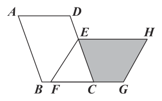
（A） 21（B） 20（C） 19（D） 18答案：（A）
詳解與考點 正解：題幹給平行四邊形 ABCD 與 EFGH 全等，先依對應 A→H、B→E、C→F、D→G 找邊長。AB=7、AD=5，所以 FG=CD=7、GH=DA=5、HE=AB=7，且 BC=AD=5。C 在 FG 上且 FC=3，故 CG=FG−FC=7−3=4；E 在 DC 上，EC=5。四邊形 ECGH 的周長=EC+CG+GH+HE=5+4+5+7=21，故 A 為正解。
B：20 是遺漏或錯配四邊形的一段邊長，與 5+4+5+7 不符。
C：19 是把對應邊或 CG=7−3 的計算處理錯誤。
D：18 同樣未完整計入 EC、CG、GH、HE 四段，錯誤。
本題考點：全等圖形——依頂點對應找出相等的對應邊；平行四邊形——對邊相等；周長——將封閉圖形邊界的所有線段長相加。
第 19 題
圖 ( 十一 ) 的數線上有 A(−2)、O(0)、B(2) 三點。今打算在此數線上標示 P ( p)、 Q(q) 兩點，且 p、 q 互為倒數，若 P 在 A 的左側，則下列敘述何者正確？
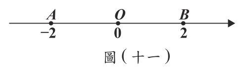
（A） Q在AO上，且AQ<QO（B） Q在AO上，且AQ>QO（C） Q在OB上，且OQ<QB（D） Q在OB上，且OQ>QB答案：（B）
詳解與考點 正解：題幹給 P 在 A（−2）左側，先用倒數判定 Q 的位置，再比較線段長。P 在 A 左側，所以 p＜−2。因 p、q 互為倒數，q=1/p；p 為負數，所以 q 為負數。又因 |p|＞2，所以 |q|=1/|p|＜1/2，因此 −1/2<q<0，Q 在 A、O 之間。OQ=|q|＜1/2；AQ=q−（−2）=2+q，而 q＞−1/2，所以 AQ>2−1/2=3/2。故 AQ>QO，B 為正解。
A：Q 在 AO 上的判斷正確，但把線段長比反；由 AQ>3/2 且 OQ<1/2 可知 AQ>QO，不是 AQ<QO。
C、D：兩項都把 q 放在 OB 上，等於把 p＜−2 的倒數誤判為正數；負數的倒數仍為負數，所以 Q 不會在 O、B 之間。
本題考點：倒數的數線位置——先依 p 的正負判定 1/p 的正負，再用 |1/p|=1/|p| 判定距離；線段長比較——在數線上以兩點座標相減或取絕對值計算，不能只看 Q 靠近哪一端。
第 20 題
四邊形 ABCD 中，E、F 兩點在 \(\overline{BC}\) 上，G 點在 \(\overline{AD}\) 上，各點位置如圖（十二）所示。連接 \(\overline{GE}\)、\(\overline{GF}\) 後，根據圖（十二）中標示的角與角度，判斷下列關係何者正確？
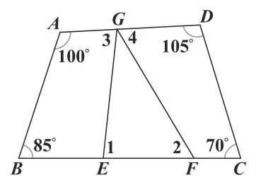
（A） \(\angle 1 + \angle 2 < \angle 3 + \angle 4\)（B） \(\angle 1 + \angle 2 > \angle 3 + \angle 4\)（C） \(\angle 1 + \angle 4 < \angle 2 + \angle 3\)（D） \(\angle 1 + \angle 4 > \angle 2 + \angle 3\)答案：（D）
詳解與考點 正解：題幹要求比較角和，利用四邊形內角和 360° 分別建立兩個關係式。四邊形 GECD 中，∠EGD=180°−∠3，因此（180°−∠3）+∠1+70°+105°=360°，得 ∠1−∠3=5°。四邊形 ABFG 中，100°+85°+∠2+（180°−∠4）=360°，得 ∠4−∠2=5°。兩式相加：（∠1+∠4）−（∠2+∠3）=10°>0，所以 ∠1+∠4>∠2+∠3，故 D 為正解。
A：比較 ∠1+∠2 與 ∠3+∠4，不能由上述固定差值推出，並非恆成立。
B：同樣比較 ∠1+∠2 與 ∠3+∠4，圖中點的位置改變時關係可能改變，錯誤。
C：與計算所得 ∠1+∠4 比 ∠2+∠3 大 10° 相反，錯誤。
本題考點：四邊形內角和——任一四邊形內角和為 360°；角度比較——先將題圖角轉為等式，再相減或相加判斷固定正負。
第 21 題
如圖 ( 十三 )，AC、BD 皆為半圓，AC 與 BD 相交於 E 點，其中 A、 B、C、 D 在同一直線上，且 B 為 AC 的中點。若 CE = 58°，則 BE 的度數為何？
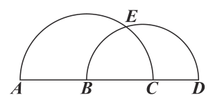
（A） 58（B） 60（C） 62（D） 64答案：（D）
詳解與考點 正解：題幹給弧 CE=58°，弧 CE 對半圓 AC 的圓心 B 所張圓心角，所以 ∠CBE=58°。設半圓 BD 的圓心為 M，連接 BE。因 BE=BC 為半圓 AC 的半徑，且 MB=ME 為半圓 BD 的半徑，△MBE 為等腰三角形；又 ∠MBE=∠CBE=58°，所以 ∠MEB=58°。∠BME=180°−58°−58°=64°，此圓心角對應弧 BE，故 D 為正解。
A：58 是把弧 CE 的度數直接當成弧 BE，兩弧所對的圓心角不同，錯誤。
B：60 未依等腰三角形使兩底角同為 58° 計算，錯誤。
C：62 是將 180°−2×58° 的運算算錯，錯誤。
本題考點：圓心角與弧——弧的度數等於它所對圓心角的度數；等腰三角形——兩腰相等則兩底角相等，三內角和為 180°。
第 22 題
如圖 ( 十四 )，ΔABC 內部有一點 D，且 ΔDAB、ΔDBC、ΔDCA 的面積分別為 5、4、3 。若 ΔABC 的重心為 G，則下列敘述何者正確？
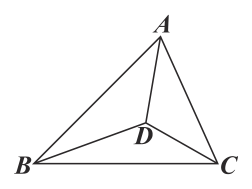
（A） ΔGBC與ΔDBC的面積相同，且DG與BC平行（B） ΔGBC與ΔDBC的面積相同，且DG與BC不平行（C） ΔGCA與ΔDCA的面積相同，且DG與AC平行（D） ΔGCA與ΔDCA的面積相同，且DG與AC不平行答案：（A）
詳解與考點 正解：題幹給三個小三角形面積並指定 G 為重心，應先求總面積，再用重心的等面積性質。△ABC 面積＝5+4+3=12。重心 G 將 △ABC 分成 △GAB、△GBC、△GCA 三個等面積三角形，所以 △GBC 面積＝12÷3=4。已知 △DBC 面積＝4，因此 △GBC 與 △DBC 面積相同；兩三角形共用底 BC，面積相同表示 G、D 到 BC 的距離相等，故 DG∥BC，選 A。
B：△GBC 與 △DBC 的面積皆為 4，但同底等面積時頂點到該底邊等距，應得 DG∥BC，不是不平行。
C：△GCA 面積＝12÷3=4，而 △DCA 面積＝3，兩者不相同，錯誤。
D：△GCA 面積＝4、△DCA 面積＝3，兩者不相同；由共底 AC 且面積不同，也可知 G、D 到 AC 的距離不同，所以 DG 確實不平行 AC，但 D 要求兩項都成立，前半句已錯。
本題考點：重心面積——重心把三角形分成三個等面積三角形，總面積 12 時各為 4；同底面積——共底三角形的面積相同時高相同，兩頂點連線平行於底邊；面積不同時高不同，兩頂點連線不平行於底邊。
第 23 題
如圖 ( 十五 )，等腰梯形紙片 ABCD 中，AD // BC，AB = DC，∠B = ∠C，且 E 點在 BC 上，DE // AB。今以 DE 為摺線將 C 點向左摺後，C 點恰落在 AB 上，如圖 ( 十六 ) 所示。若 CE = 2，DE = 4，則圖 ( 十六 ) 的 BC 與 AC 的長度比為何？
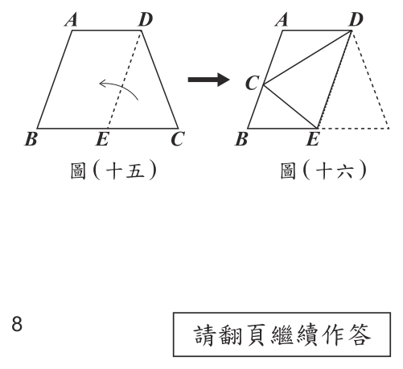
（A） 1：2（B） 1：3（C） 2：3（D） 3：5答案：（B）
詳解與考點 正解：要找摺後的 BC：AC，先用平行線與摺疊後的相似三角形求 BC。因 AD∥BE、AB∥DE，所以四邊形 ABED 為平行四邊形，AB=DE=4。摺疊後 C 點落在 AB 上，圖（十六）中 ∠B＝∠DCE，且 ∠BCE＝∠CED，因此△BCE∽△CED。對應邊比例為 BC：CE=CE：ED。代入 CE=2、ED=4，得 BC：2=2:4，所以 BC×4=2×2=4，BC=1。又 C 在 AB 上，因此 AC=AB-BC=4-1=3。故 BC：AC=1:3，B 為正解。
A：若 BC：AC=1:2，且 BC+AC=AB=4，則 BC=4×1／(1+2)＝4/3、AC=4×2／(1+2)＝8/3；但相似形已算得 BC=1，故錯誤。
C：若 BC：AC=2:3，則 BC=4×2／(2+3)＝8/5、AC=4×3／(2+3)＝12/5；BC 不等於相似形所得的 1，故錯誤。
D：若 BC：AC=3:5，則 BC=4×3／(3+5)＝3/2、AC=4×5／(3+5)＝5/2；BC 同樣不等於 1，故錯誤。
本題考點：相似三角形——摺疊保長並配合平行線找出對應角，使△BCE∽△CED；由 BC：CE=CE：ED 代入 2、4 求得 BC=1，再用 AB=4 算出 AC=3。
第 24 題
以下為甲、乙兩個關於成年女性理想體重的敘述：
（甲）有的女性使用算法①與算法②算出的理想體重會相同
（乙）有的女性使用算法②與算法③算出的理想體重會相同
對於甲、乙兩個敘述，下列判斷何者正確？
表（一） 女性理想體重 男性理想體重 算法① 身高×身高×22 身高×身高×22 算法② (100×身高−70)×0.6 (100×身高−80)×0.7 算法③ (100×身高−158)×0.5+52 (100×身高−170)×0.6+62
（A） 甲、乙皆正確（B） 甲、乙皆錯誤（C） 甲正確，乙錯誤（D） 甲錯誤，乙正確答案：（D）
詳解與考點 正解：題幹的「有的女性」是存在性敘述，應把兩種算法列成方程式，再檢查解是否在成年女性合理身高範圍內。令身高為x公尺。甲比較算法①、②：22x²＝(100x-70)×0.6，即22x²＝60x-42，整理為22x²－60x+42=0；判別式＝（－60）²－4×22×42=3600-3696＝－96，小於0，無實數解，甲錯誤。乙比較算法②、③：60x-42=(100x-158)×0.5+52=50x-79+52=50x-27；移項得10x=15，x=1.5，存在符合情境的身高，乙正確。因此為「甲錯誤、乙正確」，D為正解。
A：甲沒有實數解，不能判為甲、乙皆正確，錯誤。
B：乙算得x=1.5，存在可使兩算法相同的女性，不能判乙錯誤，錯誤。
C：甲無實數解、乙有x=1.5的解，兩項判斷皆顛倒，錯誤。
本題考點：存在性敘述——「有的」必須找到至少一個符合條件的值；比較算法——令兩式相等後解方程式，二次式可用判別式判定有無實數解，並檢查所得身高是否符合題意範圍。
第 25 題
無論我們使用哪一種算法計算理想體重，都可將個人的實際體重歸類為表（二）的其中一種類別。當身高 1.8 公尺的成年男性使用算法②計算理想體重並根據表（二）歸類，實際體重介於 \(70 \times 90\%\) 公斤至 \(70 \times 110\%\) 公斤之間會被歸類為正常。若將上述身高 1.8 公尺且實際體重被歸類為正常的成年男性，重新以算法③計算理想體重並根據表（二）歸類，則所有可能被歸類的類別為何？
表（二） 實際體重 類別 大於理想體重的 120% 肥胖 介於理想體重的 110% ～ 120% 過重 介於理想體重的 90% ～ 110% 正常 介於理想體重的 80% ～ 90% 過輕 小於理想體重的 80% 消瘦
（A） 正常（B） 正常、過重（C） 正常、過輕（D） 正常、過重、過輕答案：（B）
詳解與考點 正解：題幹先給算法②的正常體重區間，改用算法③後要比較同一批實際體重所落入的分類，所以先算區間端點，再依算法③的理想體重逐一判定。算法②的理想體重是 70 公斤。正常下限=70×90%=63 公斤；正常上限=70×110%=77 公斤，因此實際體重範圍為 63 至 77 公斤。把 63 公斤與 77 公斤分別代入算法③所得理想體重的分類百分比，區間會跨在「正常」與「過重」兩類；同一連續體重區間內也可取得這兩類的體重值。因此所有可能類別為正常、過重，B 為正解。
A：只保留正常，等於只看區間中的部分體重，漏掉另一端以算法③判為過重的情形。
C：把可能類別列為正常、過輕，但 63 公斤代入算法③後並未低於過輕的判準；它看起來對，是把算法②正常範圍的下限誤當成算法③的過輕界線。
D：多列入過輕，將算法②與算法③的理想體重基準混用，造成錯誤分類。
本題考點：百分比區間——先以理想體重×90% 與理想體重×110% 算出實際體重端點；分類轉換——基準公式改變後，必須把同一實際體重重新除以新基準判定，不能沿用原分類。
第 26 題
1. 「健康飲食餐盤」是一種以圖畫呈現飲食指南的方式，圖畫中各類食物區塊的面積比，表示一個人每日所應攝取各類食物的份量比。某研究機構對於一般人如何搭配「穀類」、「蛋白質」、「蔬菜」、「水果」這四大類食物的攝取份量，以「健康標語」說明這四大類食物所應攝取份量的關係如圖( 十七)，並繪製了「健康飲食餐盤」如圖( 十八)。圖( 十七) 圖( 十八) 請根據上述資訊回答下列問題，完整寫出你的解題過程並詳細解釋： (1) 請根據圖( 十七) 的「健康標語」，判斷一個人每日所應攝取的「水果」和「蛋白質」份量之間的大小關係。 (2) 將圖( 十八) 的「健康飲食餐盤」簡化為一個矩形，且其
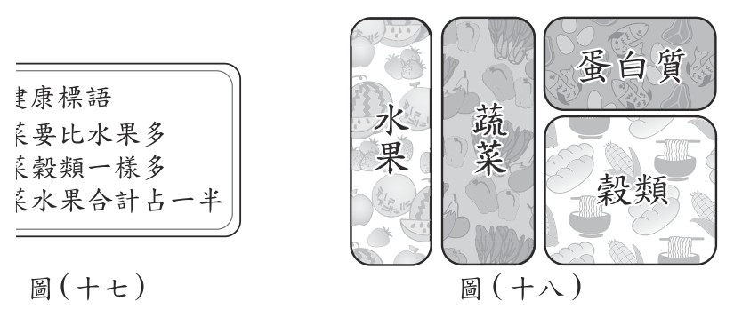
本題選項為上圖中的 A／B／C／D，請對照圖片作答。
標準答案未收錄
詳解與考點 考點：以面積表示份量的比例推理＋一次方程式整數解的存在性判斷。
由圖（十七）健康標語：①蔬菜＞水果；②蔬菜＝穀類；③蔬菜＋水果＝總量一半。
(1) 全部四類合計為「1」（整盤）。由③知「蔬菜＋水果」占一半，故另一半「蛋白質＋穀類」也是一半，即蔬菜＋水果＝蛋白質＋穀類。又由②蔬菜＝穀類，兩式相減即得水果＝蛋白質。
答：水果與蛋白質份量「一樣多（相等）」。
(2) 餐盤為長 16、寬 10 的矩形，總面積＝160，面積即代表份量。設水果寬為 a，則水果面積＝10a；右側「蛋白質＋穀類」整塊寬度設為 c，蛋白質高 b、穀類高 (10−b)。
由③：蔬菜＋水果＝80，故蔬菜面積＝80−10a，蔬菜寬＝(80−10a)/10=8−a；於是 c=16−a−(8−a)＝8（右塊寬恆為 8）。
穀類面積＝(10−b)×8=80−8b。
由②蔬菜＝穀類：80−10a=80−8b，得 8b=10a，即 b=5a/4。
由①蔬菜＞水果：8−a>a，得 a<4（且 a>0）。
要 b 為整數需 a 為 4 的倍數，但 0<a<4 之間沒有 4 的倍數；a=4 雖使 b=5 為整數，卻違反 a<4。故在 b=5a/4、0<a<4 的限制下，a、b 無法同時為正整數。
答：a、b 不可能同時為正整數。
第 27 題
2. 密拼接成中間有圓形鏤空的大圓桌，上視圖如圖( 二十) 所示，其外圍及鏤空邊界為一大一小的同心圓，其中大圓的半徑為 80 公分，小圓的半徑為 20 公分，且任兩張相鄰桌子接縫的延長線皆通過圓心。圖( 二十) 為了有效運用教室空間，老師考慮了圖( 二十一) 及圖( 二十二) 兩種拼接此款桌子的方式。圖(二十一) 圖(二十二) 這兩種方式皆是將 2 張桌子的一邊完全貼合進行拼接。 A、 B 兩點為圖(二十一) 中距離最遠的兩個桌角，C、D 兩點為圖( 二十二) 中距離最遠的兩個桌角，且 CD 與 2 張桌子的接縫 EF 相交於 G 點，G 為 EF 中點。請根據上述資訊及圖(
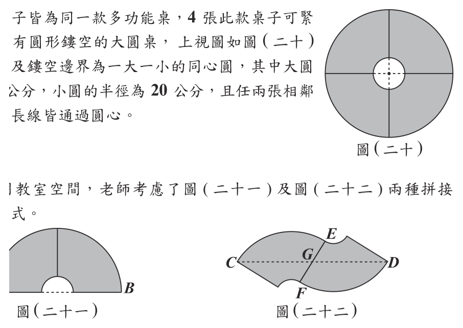
本題選項為上圖中的 A／B／C／D，請對照圖片作答。
標準答案未收錄
詳解與考點 考點：扇環（四分之一圓環）桌面的拼接、線段中點與畢氏定理。
單張桌子是「四分之一圓環」：大圓半徑 80、鏤空小圓半徑 20，故每條筆直邊（即半徑方向的邊）長 80-20=60，兩條筆直邊互相垂直（夾角 90°），外緣是半徑 80 的弧、內緣是半徑 20 的弧。
(1) 求 GF：
圖（二十二）中，接縫 EF 是其中一張桌子的一條筆直邊（兩張桌子各以一條筆直邊互相黏合並完全重合），所以 EF＝筆直邊長＝80-20=60。又題目給定 G 為 EF 的中點，故
GF=EF÷2=60÷2=30。
答：GF=30 公分。
(2) 比較 CD 與 AB：
圖（二十一）中，A、B 為相距最遠的兩桌角，即大圓的直徑兩端，故 AB=80×2=160。
圖（二十二）由 G 點觀察具有點對稱：C、D 分別為兩張桌子的外側桌角，G 為 CD 中點，所以 CD=2×GC。取左側桌子，設其圓心為 O，桌角 C 在外緣上，故 OC=80（半徑）。接縫所在那條筆直邊沿半徑方向，且 G 落在此邊上、O 到 G 的距離為 50（因為 E=30u、O＝－50u，得 OG=50）；又兩筆直邊垂直，故 OC⊥OG。
在直角三角形 OGC 中（直角在 O）：
GC＝√(OC²＋OG²)＝√(80²＋50²)＝√(6400+2500)＝√8900=10√89。
故 CD=2×10√89=20√89≈188.7。
比較：CD²＝35600，AB²＝25600，CD²＞AB²，所以 CD>AB。
答：CD（＝20√89≈188.7 公分）比 AB（＝160 公分）長。
其他年度
回到國中教育會考數學的年度總覽 ，
或到國中教育會考題庫首頁 看其他科目。
題目與標準答案出自心測中心 會考歷屆試題（依著作權法 §9，考試試題不受著作權保護）。依中華民國《著作權法》第 9 條第 1 項第 5 款，
依法令舉行之各類考試試題不得為著作權之標的，得自由利用。詳解為 AI 整理的學習輔助，
並非官方標準答案 ；中華民國會修訂，引用前請對照現行版本查證。